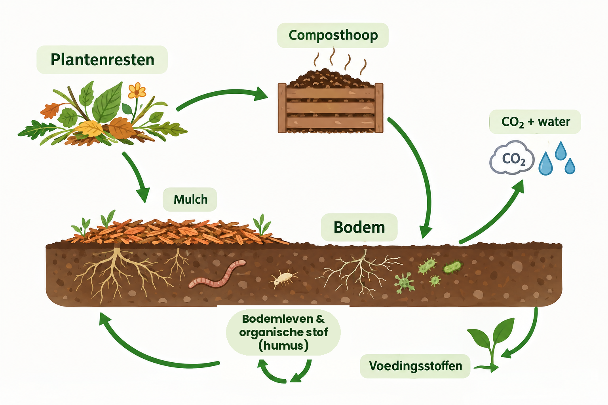

Bladeren, gras, snoeisel, wortels, compost, mulch, humus… In een tuin komen heel wat vormen van organisch materiaal samen. Ze horen allemaal bij dezelfde kringloop, maar ze zijn niet hetzelfde. Het belangrijkste verschil is misschien niet wat iets precies heet, maar wat ermee gebeurt in de bodem.
Het begint met plantenresten
Een plant haalt water en voedingsstoffen uit de bodem en gebruikt koolstofdioxide uit de lucht om te groeien. Daarbij maakt ze organisch materiaal: bladeren, stengels, wortels, vruchten. Wanneer die plantenresten afsterven, begint een nieuwe fase. Bladeren vallen op de bodem, wortels sterven af, een plant wordt geoogst of vergaat, snoeisel komt in de tuin terecht. Dat materiaal wordt voedsel voor het bodemleven.
Mulch: materiaal op de bodem
Leg je plantenresten boven op de bodem, dan spreken we van mulch. Mulch is dus niet een bepaald soort materiaal, maar een manier om organisch materiaal te gebruiken: als laag op de bodem. Bladeren, stro, houtsnippers, gras en zelfs compost kunnen als mulch dienen. Een mulchlaag doet meteen iets nuttigs — ze bedekt en beschermt de bodem — en wordt tegelijk langzaam afgebroken door schimmels, bacteriën, kleine bodemdieren en andere organismen. De mulch verdwijnt dus geleidelijk, maar de stoffen waaruit ze bestaat verdwijnen niet allemaal op dezelfde manier of met dezelfde snelheid. bekijk alle voordelen én nadelen
Compost: een tussenstap
Je kunt plantenresten ook eerst op de composthoop leggen. Daar worden ze onder invloed van bodemorganismen afgebroken: een deel van het gemakkelijk afbreekbare materiaal verdwijnt als koolstofdioxide, water en warmte, terwijl andere stoffen worden omgezet en in de compost achterblijven. Na voldoende compostering ontstaat een donker, kruimelig materiaal waarin de oorspronkelijke plantenresten grotendeels niet meer herkenbaar zijn. Maar compost is geen eindstation — wanneer je compost in de bodem brengt, gaat de afbraak gewoon verder.
Wat gebeurt er dan in de bodem?
Hier wordt het interessant. Organisch materiaal bestaat uit allerlei verschillende stoffen: sommige gemakkelijk afbreekbaar, andere veel moeilijker. Het bodemleven breekt het materiaal stap voor stap af. Daarbij ontstaan onder andere:
- voedingsstoffen die opnieuw beschikbaar kunnen komen voor planten;
- koolstofdioxide;
- water;
- nieuwe biomassa van bacteriën en schimmels;
- en organische stoffen die veel langer in de bodem kunnen blijven.
De afbraak verloopt eerst relatief snel en daarna steeds langzamer. Een deel van het materiaal kan dus binnen korte tijd verdwijnen, terwijl andere organische stoffen tientallen jaren of zelfs veel langer in de bodem aanwezig kunnen blijven.
En waar komt humus dan vandaan?
Humus wordt vaak voorgesteld als het eindproduct van de afbraak: wat overblijft nadat de gemakkelijk afbreekbare stoffen verdwenen zijn. Dat beeld is bruikbaar, maar de werkelijkheid is iets ingewikkelder. In de bodem bestaat organische stof uit verschillende fracties. Een deel is jong en gemakkelijk afbreekbaar, een ander deel veel stabieler. Die stabielere organische stof kan zich bovendien verbinden met minerale bodemdeeltjes en bijdragen aan stabiele bodemaggregaten — dat is de organische stof die we in de tuin vaak met humus aanduiden.
Humus is dus niet simpelweg "compost die oud genoeg is geworden". Een deel van de compost wordt snel afgebroken, een deel voedt het bodemleven, een deel levert voedingsstoffen, en een ander deel blijft veel langer aanwezig als stabielere organische stof.
Organische stof is meer dan humus
Wanneer een bodemanalyse bijvoorbeeld 3% organische stof aangeeft, betekent dat niet dat de bodem voor 3% uit humus bestaat. Organische stof is de verzamelnaam voor organisch materiaal in de bodem. Daar kunnen onder meer in zitten:
- verse of gedeeltelijk afgebroken plantenresten;
- resten van wortels;
- resten van bodemorganismen;
- gemakkelijk afbreekbare organische stoffen;
- stabielere organische stof;
- organische stof die aan minerale bodemdeeltjes gebonden is.
De verschillende fracties gedragen zich verschillend. De gemakkelijk afbreekbare fracties zijn vooral belangrijk als voedsel en energiebron voor het bodemleven en leveren bij hun afbraak voedingsstoffen. De stabielere fracties blijven veel langer aanwezig en spelen een belangrijke rol in de fysische en chemische eigenschappen van de bodem.
Waarom willen we organische stof in onze bodem?
Omdat ze veel meer doet dan alleen voedingsstoffen leveren. Organische stof:
- voedt het bodemleven;
- helpt voedingsstoffen vasthouden en beschikbaar maken;
- draagt bij aan het waterbergend vermogen;
- helpt minerale bodemdeeltjes samenklitten tot stabiele aggregaten;
- bevordert een goede bodemstructuur;
- draagt bij aan een goede poriënstructuur en luchthuishouding.
Het gaat dus niet alleen om "voeding voor de plant". Een deel van het organische materiaal is vooral belangrijk voor het bodemleven, een ander deel voor de bodemstructuur, en weer een ander deel levert rechtstreeks of indirect voedingsstoffen.
De bodem is geen voorraadkast
Organische stof blijft niet zomaar liggen. Er wordt voortdurend organisch materiaal aangevoerd én afgebroken: plantenresten, wortels, mulch, compost, mest en resten van bodemorganismen komen erbij, terwijl het bodemleven materiaal afbreekt tot voedingsstoffen, CO₂, water en nieuwe organische verbindingen. Een deel van die organische stof blijft langer behouden en draagt bij aan de stabiele voorraad in de bodem. Het uiteindelijke gehalte aan organische stof is daarom het resultaat van de balans tussen aanvoer en afbraak: is de afbraak groter dan de aanvoer, dan daalt het gehalte; is de aanvoer voldoende om de afbraak te compenseren, dan blijft het gehalte ongeveer op peil.
Niet alles wat je toevoegt blijft even lang
Dat is een belangrijk punt als je de organische stof in je bodem wilt opbouwen. Verse gewasresten bevatten relatief veel gemakkelijk afbreekbaar materiaal. Compost en oude stalmest bevatten gemiddeld een groter aandeel stabielere organische stof. Een deel van het materiaal dat je toevoegt, is na één jaar alweer verdwenen; een ander deel blijft veel langer aanwezig. Daarom spreekt men soms over effectieve organische stof: het deel van de toegediende organische stof dat na één jaar nog in de bodem aanwezig is. Maar ook die effectieve organische stof is niet permanent — ze wordt daarna nog verder afgebroken.
Je kunt die hele beweging ook visueel bekijken: van plantenrest, via mulch of composthoop, tot bodemorganische stof die het bodemleven verder verwerkt tot voedingsstoffen, stabielere organische stof en CO₂ — waarna de kringloop opnieuw begint.

Het doel is dus niet om organische stof tegen elke prijs te bewaren. Een levende bodem moet organische stof afbreken — zonder afbraak komen voedingsstoffen niet vrij en heeft het bodemleven geen voedsel. Het gaat erom dat er voldoende organisch materiaal wordt aangevoerd om de afbraak te compenseren, terwijl een deel van die organische stof langduriger in de bodem kan worden vastgehouden.